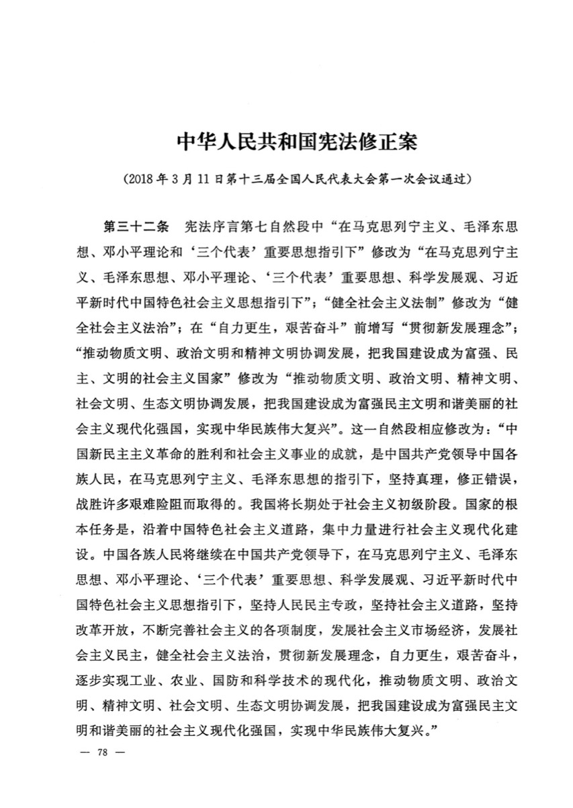

主題は習近平の意思決定と、それが対外債権の処理に残す結果である。2018年の任期上限削除の後に再編の型が変わったか。第20期で後継を指定しなかった結果、移行後に名目削減比率が上がるか。人名予想は置かない。国別案件と債務残高の詳細は 013_geo 第4章 と china プロファイル に置く。代表制と自由主義の区別は 自由主義・民主主義・ポスト民主主義 で扱った。
主張
読者と判断： 習近平期の対中ソブリン債は、測定できる観測事例（COVID期・ザンビア2023）では名目帳消しではなく満期・金利変更を出発点にする。2018年以後の全件には一般化しない。後継不指定のまま移行が起きた場合に名目削減比率が上がるかは、移行前後の再編パネルが揃うまで基本シナリオにしない。
主張： 習近平が主導した2018年の国家主席連続任期上限削除の後に測定できる観測事例（COVID期33件とザンビア2023年合意）では、対中二国間ソブリン再編の中心処理は名目元本削減ではなく満期・金利変更である。2018年以後の全件パネルと、任期上限削除が再編型を決めたという因果識別は行わない。Franz et al. の推計は補助であり、判定の主証拠にはしない。反証条件： （a）COVID期の対中再編で名目元本削減が過半を占める。（b）ザンビア2023年合意が名目削減を中心条件としている。判定： 支持（観測事例に限定。COVID期33件は0件、ザンビア2023は元本保全）。主張： 習近平が第20期一中全会で次期総書記を指定しなかった結果、将来の権力移行の局面では対中二国間ソブリン再編の名目元本削減比率が上がる。比較基準は移行前の習近平期（COVID期およびザンビア2023）である。反証条件： 移行後に公開された対中二国間再編の集計で、名目削減比率が移行前（COVID期0/33、ザンビア2023は元本保全）以下である。判定： 判定不能（権力移行は未到来。移行前後の再編パネルが無い。確認できるのは、一中全会公報に次期総書記の指定が無いことまでである）。
分解： 物理的制約は、習近平個人が同時に処理できる危機の上限である。お金の流れは、一帯一路で積み上がった対外債権のストック再編と、国内土地出让の現金フローである。利得の帰属は、政策銀行の名目保全と借り手のキャッシュフロー軽減である。法と強制力は、憲法・党規約の任期条項と人事権である。時間は、再編が年単位、後継確定が党大会周期である。
先に結論。
① 観測事例では、名目削減は中心処理にならない。 COVID期は33件中0件、ザンビア2023は元本保全である15 16 20 。対象は測定できた事例に限る。2018年以後の全件や因果識別は判定していない。
② 後継不指定の移行後に名目削減比率が上がるかは判定不能である。 第20期一中全会は次期総書記を指定していない4 。移行前後の再編比較は無い。
③ 価格付けの単位は再編条件である。 コミット（AidData 1.34兆ドル）と残高（世界銀行IDS 約1,700億ドル）は定義が異なる9 11 。
国内財政の背景（主張の検証データではない）。 2024年の国有土地使用権出让収入は4兆8,699億元（前年比−16%）、IMF拡張債務はGDP比124.0%、外貨準備は3.3579兆ドル（2025年12月末）である5 6 7 8 。国内救済の資源制約は、主張2の移行後シナリオで効きうるが、本稿の判定には使わない。
2018年修憲の賛成票
2,958 / 反対2・棄権3
① 観測事例では名目削減は中心にならないIn Observed Cases, Face-Value Cuts Stay Secondary 主張1の行動変数は、習近平が主導した2018年の国家主席連続任期上限削除である。検証する結果は、その後に測定できる観測事例で名目元本削減が中心処理になるかである。観測事例はCOVID期（2020–2021年、33件）とザンビア2023年合意に限定する1 2 15 20 。2018年以後の全再編のパネルは揃っていない。全件への一般化と、削除が再編型を決めたという因果識別は行わない。2000–2019年の困窮局面51件は胡錦濤期を含むため主証拠に使わない。参考として、同期間の名目削減は4件、延長のみは45件である15 。
習近平の行動（2018）
国家主席の連続任期上限削除
COVID期 33件
名目削減 0件（2020–21）
OCC型 ザンビア2023
元本保全・金利引下げ
価格付けの出発点＝満期・金利変更。移行後の帳消しは主張2（判定不能）
図1. 主張1の検証範囲。行動は2018年の任期上限削除、結果は測定できた観測事例（COVID期・ザンビア2023）に限る。
ザンビア2023年合意は、現在価値では大幅な軽減になる。中国輸出入銀行側は元本を保全した。金利は基準シナリオで2023–2036年に1%、以降は2.5%以下である。元本の年次返済は2026–2043年の18回である。OCC発表時の記述では残余債務の返済を2026–2046とする表現もあるが、AidDataが示す2023年10月MOUの返済表は2043年で終わる20 。Franz–Horn–Parks–Reinhart–Trebesch の再編48件・136ローンの推計でも、ヘアカットはパリクラブや民間債権者より小さい17 。
コミットと残高を取り違えない。AidData GCDF 3.0の1.34兆ドル（2000–2021年、20,985件）は約束の累計である。世界銀行IDSの対中残高約1,700億ドル（2020年末、低中所得国）は実行済残高である9 11 。Boston UniversityのCLAはアフリカ向け累計1,822.8億ドル（2000–2023年）、2023年新規は46.1億ドルである10 。国別案件の詳細は地理セクションに置き、本稿は習近平の行動後の再編条件の型だけを扱う。
ザンビア2023合意（公式債権者委員会型）の条件分解
名目元本
保全（削減なし）
金利
2023–36年: 1%
以降: ≤2.5%
元本返済
2026–2043年
18回（MOU）
元本支払
〜2026停止
現在価値の軽減は金利と満期で実現する。名目帳消しではない。
出典: AidData Project 104077（出典20）
図1b. 主張1のOCC型事例。ザンビア2023合意の返済条件は、名目元本保全と金利・満期の変更に分解できる。
いずれも2018年3月11日、第十三届全国人民代表大会第一次会議の第三次全体会議である。Commons説明では、修憲案の票決が行われた場面である。習近平が主導した国家主席連続任期上限の削除は、この票決で成立した（賛成2,958・反対2・棄権3）。主張1の行動変数そのものである。写真：叶兵 ／Public domain 右も同一作者（別ファイル ）／Wikimedia Commons

『中华人民共和国宪法修正案（2018年）』の第1頁（Commonsの公式スキャン）。国家主席の連続任期上限削除を含む修憲の実物文書である。主張1の行動変数を条文として示す。再編条件の数値はAidDataとHorn系論文で扱う。写真：全国人民代表大会 ／Public domain／Wikimedia Commons
② 後継不指定の移行後｜名目削減比率は判定不能No Designated Successor; Post-Transition Cuts Unverified 主張2の行動変数は、習近平が第20期一中全会で次期総書記を指定しなかったことである4 。予測する結果は、将来の権力移行の局面で、対中二国間ソブリン再編の名目元本削減比率が移行前より上がることである。必要なデータは移行前後の再編パネルである。権力移行は未到来のため、判定は不能とする。
行動：後継不指定
第20期一中全会（2022）
予測：移行後に名目削減↑
移行前（0/33・元本保全）より上
判定不能
移行前後パネルが無い
必要なデータ：権力移行後に成立した対中二国間再編の名目削減比率
写真は後継不指定時点の習近平本人を示し、将来の再編条件は示さない。
図2. 主張2の因果構造。行動は確認できる。結果の比較は移行未到来のため判定不能である。
いずれも2022年10月23日、北京の人民大会堂で内外記者に話す中国共産党総書記の習近平である（Commons説明）。同日の第20期一中全会公報には次期総書記の指定が無い。主張2の行動変数（後継不指定）の時点の本人である。移行後の再編条件や名目削減比率は写っていない。写真：China News Service ／CC BY 4.0 右も同一作者（別ファイル ）／Wikimedia Commons
検証したこと／していないこと。 検証したのは、習近平の2018年任期上限削除の後の再編条件（COVID期・ザンビア2023）と、第20期での後継不指定である。権力移行後の名目削減比率、国内債務の時間順序、周辺国の決済律速は検証していない。
③ 主張から導く利得の帰属Payoffs Implied by the Claims この節は検証結果から導く。主張1が観測事例で支持されるなら、COVID期とザンビア2023に整合する価格付けの出発点は名目保全と満期延長である。2018年以後の全件には伸ばさない。主張2は判定不能のため、後継不指定を理由に移行後の大規模帳消しを基本シナリオにはしない。
④ 残っている問いOpen Questions
権力移行の前後で、名目元本削減の比率は変わるか。 主張2の判定には、この前後比較が必要である。移行後に名目削減が過半になれば、価格付けの出発点を改める。ザンビア型の現在価値ヘアカットは、名目削減なしのままどこまで拡大するか。 金利引下げと超長期延長の組合せが一般化すれば、帳消しと同値の処理が増える。2018年以後の対中二国間再編を全件パネルでみると、名目削減比率はどうなるか。 揃えば主張1を観測事例から全件へ拡張できる。2013–2017年との前後差も同じパネルで測れる。周辺国への波及で、決済制限の前後の貿易数量はどれだけ変化したか。 本稿の主張2からは外した。別の因果として残る。
⑤ 出典Sources
中国人大网「中华人民共和国宪法修正案」（2018年3月11日、第79条の任期上限削除を含む） — http://www.npc.gov.cn/zgrdw/npc/xinwen/2018-03/12/content_2046540.htm
中国人大网「十三届全国人大一次会议举行第三次全体会议」（賛成2,958・反対2・棄権3） — http://www.npc.gov.cn/zgrdw/npc/fwyzhd/2018-03/11/content_2046761.htm
Constitution of the Communist Party of China（2022年改正、第22条・第23条） — https://www.chinatoday.com/org/cpc/Constitution-of-Communist-Party-of-China_202210.pdf
Xinhua「Communique of the first plenary session of the 20th CPC Central Committee」（2022-10-23） — https://english.news.cn/20221024/d268d68562cb485a98befcb3cfcc3a04/c.html
国家统计局「2024年全国房地产市场基本情况」 — https://www.stats.gov.cn/sj/zxfb/202501/t20250117_1958328.html
財政部国庫司「2024年财政收支情况」（国有土地使用权出让收入48,699億元、−16%） — https://gks.mof.gov.cn/tongjishuju/202501/t20250124_3955083.htm
IMF「People’s Republic of China: 2024 Article IV Consultation」Country Report No. 24/258 — https://www.imf.org/en/publications/cr/issues/2024/08/01/peoples-republic-of-china-2024-article-iv-consultation-press-release-staff-report-and-552821
State Administration of Foreign Exchange「SAFE Releases Data on China's Foreign Exchange Reserves at the End of December 2025」 — https://www.safe.gov.cn/en/2026/0107/2382.html
AidData「Global Chinese Development Finance Dataset, Version 3.0」 — https://www.aiddata.org/data/aiddatas-global-chinese-development-finance-dataset-version-3-0
Boston University GDP Center「Chinese Loans to Africa Database, 2000–2023」 — https://www.bu.edu/gdp/2024/08/21/relative-risk-and-the-rate-of-return-chinese-loans-to-africa-database-2000-2023/
World Bank「International Debt Statistics 2022」（低中所得国の対中債務残高、SSA比率） — https://documents1.worldbank.org/curated/en/552361634028314881/pdf/International-Debt-Statistics-2022.pdf
General Administration of Customs of China「Imports and Exports by Country (Region) of Origin/Destination, 12.2024」（Russia行） — http://english.customs.gov.cn/Statics/a5b4fa86-46e4-4195-a0c0-5c45ade1cb38.html
KOTRA「2024 North Korea Foreign Trade Trends」（Yonhap経由・報道。中国シェア98%） — https://en.yna.co.kr/view/AEN20250728008500320
KIEP「北・中接境地域の交易・投資と決済慣行」（銀行送金推定20–30%） — https://www.kiep.go.kr/galleryRelate.es
Horn, S., Reinhart, C. M., Trebesch, C.「Hidden Defaults」World Bank Policy Research Working Paper 9920, 2022 — https://openknowledge.worldbank.org/server/api/core/bitstreams/334d3dc2-26dc-56b0-bdf9-c0c6cb03bd9a/content
Horn, S., Parks, B. C., Reinhart, C. M., Trebesch, C.「Debt Distress on China's Belt and Road」AEA Papers and Proceedings 113: 131–34, 2023 — https://www.aeaweb.org/articles?id=10.1257/pandp.20231004
Franz, L., Horn, S., Parks, B. C., Reinhart, C. M., Trebesch, C.「The Financial Returns on China's Belt and Road」（ABCDE 2024資料。再編48件・ヘアカット推計） — https://thedocs.worldbank.org/en/doc/a943c42e936fb4fdb85b3ecc8f196333-0050022024/original/Christoph-Trebesch-ABCDE-2024-PPT.pdf
Kommersant（ロシア中央銀行統計の引用・報道）「Доля Китая в экспорте РФ составила в 2024 году 31%, в импорте — 39%」 — https://www.kommersant.ru/doc/7460232
Interfax「Share of ruble, yuan in Russia-China mutual settlements exceeds 95%」（Mishustin、2024-08-21・報道） — https://interfax.com/newsroom/top-stories/105270/
AidData Project 104077（元本停止〜2026、金利1%は2023–2036、元本返済は2026–2043の18回） — https://china.aiddata.org/projects/104077

.jpg){kind=link}